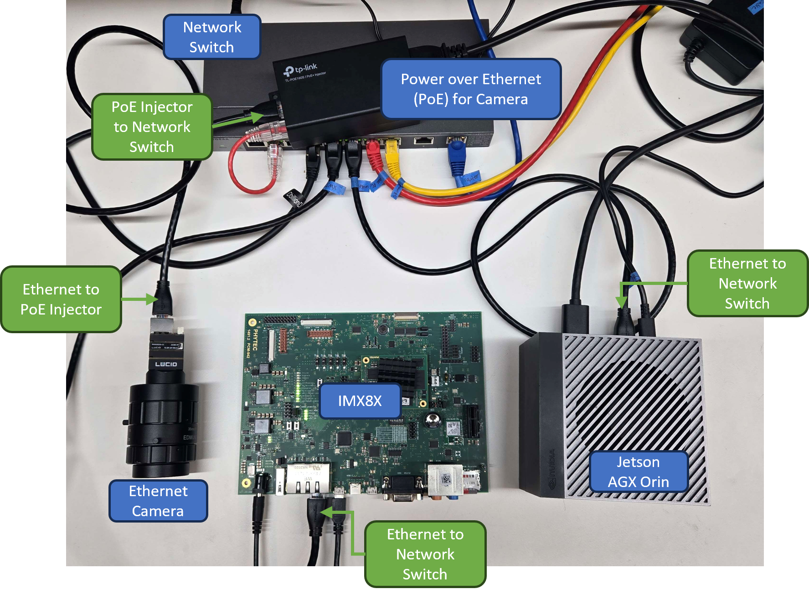
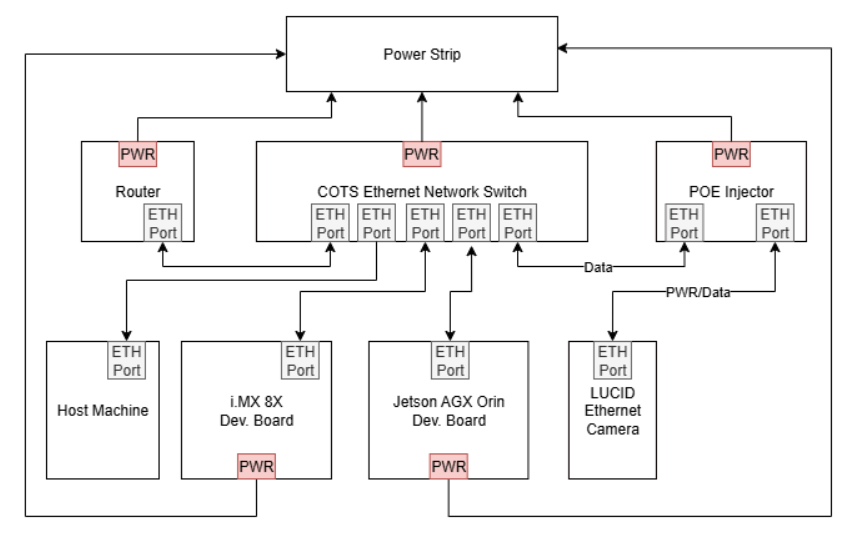
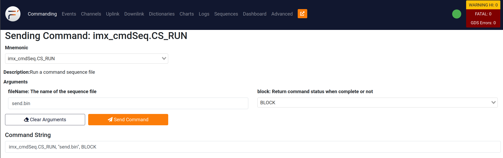
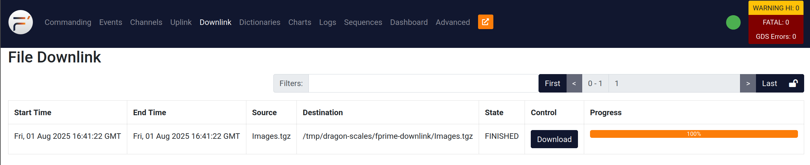

Watch our video demo on YouTube!
Check out our docs page!
SCALES Demo Development
This demo combines the F Prime Hub Pattern developed by the SCALES team with COTS evaluation boards for the Flight Computer and Edge Computer. The demo aims to accomplish the following:
- Test the capability of the split computing architecture
- Test the capability of using a network ethernet switch in this architecture
- Test the command and data handling aspects of the Flight Computer
- Test using the Hub Pattern to have the Flight Computer command the Edge Computer
Watch our video demo on YouTube!
Code and reference deployment can be found on our fprime-scales-ref GitHub.
Setup
The i.MX8X Flight Computer evaluation board, Jetson Edge Computer evaluation board, and COTS ethernet camera will be connected through a COTS managed ethernet switch. The i.MX will command the Jetson through the Hub Pattern to take a picture using the Ethernet Camera. The picture will be saved on the Jetson. When completed, the i.MX will command the Jetson through the Hub Pattern to run a computer vision algorithm on the images taken with the camera. The results will be sent to the i.MX.

Process
Using a pre-existing F Prime deployment, we created a new component called RunLucidCamera. The component achieves the following:
- GDS command to set up the camera and make sure it is connected
- GDS command to take a picture and save an image from the ethernet camera
We recycled and modified existing example code from the ethernet camera's SDK. To do this, we needed to integrate the Arena SDK for the ethernet camera into the F Prime deployment.
Arena SDK in F Prime
The Arena SDK was installed from Lucid
- Create a
libfolder in the root directory of the project. - In
fprime-scales-ref/project.cmakeadd thelibfolder as a subdirectory. - Copy the Arena SDK folders into
libatfprime-scales-ref/lib/ArenaSDK - Make a CMakeLists.txt files at
fprime-scales-ref/lib/CMakeLists/txtand add the following:add_fprime_subdirectory("${CMAKE_CURRENT_LIST_DIR}/ArenaSDK") -
Make a new CMakeLists.txt at
fprime-scales-ref/lib/ArenaSDK/CMakeLists/txtand add the Arena SDK library paths. Currently, the only way this worked was to add the paths to the exact files we wanted.set(MODULE_NAME lib_ArenaSDK) add_library(${MODULE_NAME} INTERFACE) target_include_directories(${MODULE_NAME} INTERFACE ${CMAKE_CURRENT_LIST_DIR}/include/Arena ${CMAKE_CURRENT_LIST_DIR}/GenICam/library/CPP/include ${CMAKE_CURRENT_LIST_DIR}/include/Save ${CMAKE_CURRENT_LIST_DIR}/include/GenTL ) target_link_libraries(${MODULE_NAME} INTERFACE # Your existing libraries Components_RunLucidCamera # Arena SDK libraries - provide full paths to .so or .a files ${CMAKE_CURRENT_LIST_DIR}/lib/libarena.so # Core Arena library ${CMAKE_CURRENT_LIST_DIR}/lib/libarena.so.0 # Core Arena library ${CMAKE_CURRENT_LIST_DIR}/lib/libsavec.so # Save functionality ${CMAKE_CURRENT_LIST_DIR}/lib/libgentl.so # GenTL functionality ${CMAKE_CURRENT_LIST_DIR}/lib/liblucidlog.so # Lucid logging ${CMAKE_CURRENT_LIST_DIR}/lib/libsave.so ${CMAKE_CURRENT_LIST_DIR}/lib/libarenac.so ${CMAKE_CURRENT_LIST_DIR}/ffmpeg/libavcodec.so ${CMAKE_CURRENT_LIST_DIR}/ffmpeg/libavformat.so ${CMAKE_CURRENT_LIST_DIR}/ffmpeg/libavutil.so ${CMAKE_CURRENT_LIST_DIR}/ffmpeg/libswresample.so # GenICam libraries ${CMAKE_CURRENT_LIST_DIR}/GenICam/library/lib/Linux64_ARM/libGenApi_gcc54_v3_3_LUCID.so ${CMAKE_CURRENT_LIST_DIR}/GenICam/library/lib/Linux64_ARM/libGCBase_gcc54_v3_3_LUCID.so ${CMAKE_CURRENT_LIST_DIR}/GenICam/library/lib/Linux64_ARM/libMathParser_gcc54_v3_3_LUCID.so ${CMAKE_CURRENT_LIST_DIR}/GenICam/library/lib/Linux64_ARM/liblog4cpp_gcc54_v3_3_LUCID.so ${CMAKE_CURRENT_LIST_DIR}/GenICam/library/lib/Linux64_ARM/libLog_gcc54_v3_3_LUCID.so ${CMAKE_CURRENT_LIST_DIR}/GenICam/library/lib/Linux64_ARM/libNodeMapData_gcc54_v3_3_LUCID.so ${CMAKE_CURRENT_LIST_DIR}/GenICam/library/lib/Linux64_ARM/libXmlParser_gcc54_v3_3_LUCID.so ) -
In
fprime-scales-ref/Components/RunLucidCamera/RunLucidCamera.cpp, update the include path to#include "ArenaApi.h"and#include SaveApi.h, and integrate theCppSave_Png.cppexample code from the Arena SDK into theRunLucidCamera.cpp. The constructor and deconstructor for the component was modified to include parts of the Arena SDK example code. We also modified the way the example code was saving the images so the old images don't get overwritten. The current code is here.
To Run the SCALES Demo
fprime-scales-ref F' project
Watch our video demo on YouTube!
Check out our docs page!
Development Environment
May or may not be required, but this is what we found best to use for development:
- Ubuntu 22.04 host machine
- python3.11
- git lfs (install here for amd64 and here for arm64)
How to Clone
Use the commands below in terminal to clone and set up the repository. Make sure to source the fprime-venv before you continue developing! Make sure you have git lfs installed before proceeding.
git clone https://github.com/BroncoSpace-Lab/fprime-scales-ref.git
cd fprime-scales-ref
make setup
make arena-init
source fprime-venv/bin/activate
Necessary Changes
Some lines need to be commented in lib/fprime/cmake/API.cmake in order to use fprime-python. Comment out lines 545 and 562.
After this, you should be good to go!
Hardware Setup
These directions are currently only for the FlatSat, not the custom boards the SCALES team has developed.
Make sure your hardware is configured as follows:

How to Build JetsonDeployment
You must generate build JetsonDeployment on the Jetson, we have not set up cross-compilation for aarch64-linux yet.
JetsonDeployment Build Configuration Details
Your `settings.ini` should look like this:[fprime]
project_root: .
framework_path: ./lib/fprime
; uncomment this line for JetsonDeployment
library_locations: ./lib/fprime-python:./lib/fprime-scales
; uncomment this line for ImxDeployment
; library_locations: ./lib/fprime-scales:
default_cmake_options: FPRIME_ENABLE_FRAMEWORK_UTS=OFF
FPRIME_ENABLE_AUTOCODER_UTS=OFF
# This CMake file is intended to register project-wide objects.
# This allows for reuse between deployments, or other projects.
add_fprime_subdirectory("${CMAKE_CURRENT_LIST_DIR}/Components")
# add_fprime_subdirectory("${CMAKE_CURRENT_LIST_DIR}/ImxDeployment/")
add_fprime_subdirectory("${CMAKE_CURRENT_LIST_DIR}/JetsonDeployment/")
add_fprime_subdirectory("${CMAKE_CURRENT_LIST_DIR}/lib/")
# add_fprime_subdirectory("${CMAKE_CURRENT_LIST_DIR}/lib/fprime-scales/scales/scalesSvc")
# Include project-wide components here
# add_fprime_subdirectory("${CMAKE_CURRENT_LIST_DIR}/StandardBlankComponent/")
# add_fprime_subdirectory("${CMAKE_CURRENT_LIST_DIR}/PythonComponent/")
add_fprime_subdirectory("${CMAKE_CURRENT_LIST_DIR}/MLComponent/")
add_fprime_subdirectory("${CMAKE_CURRENT_LIST_DIR}/RunLucidCamera/")
After all of this, on the Jetson you should be able to generate and build the JetsonDeployment.
To generate:
To build and set up the build environment:
On the Jetson, should be able to generate and build the JetsonDeployment with the commands below:
The make build-jetson command will fprime-util build aarch64-linux and create a linked folder for the camera images. This command also runs a script to create the build environment for fprime-python on the Jetson.
ImxDeployment
To correctly generate and build for the IMX, you need to have the build environment on your machine. Refer to this guide we made on our docs for how to set up the IMX SDK.
ImxDeployment Build Configuration Details
### For Successful Build Your `settings.ini` should look like this:[fprime]
project_root: .
framework_path: ./lib/fprime
; uncomment this line for JetsonDeployment
; library_locations: ./lib/fprime-python:./lib/fprime-scales
; uncomment this line for ImxDeployment
library_locations: ./lib/fprime-scales
default_cmake_options: FPRIME_ENABLE_FRAMEWORK_UTS=OFF
FPRIME_ENABLE_AUTOCODER_UTS=OFF
# This CMake file is intended to register project-wide objects.
# This allows for reuse between deployments, or other projects.
# add_fprime_subdirectory("${CMAKE_CURRENT_LIST_DIR}/Components")
add_fprime_subdirectory("${CMAKE_CURRENT_LIST_DIR}/ImxDeployment/")
# add_fprime_subdirectory("${CMAKE_CURRENT_LIST_DIR}/JetsonDeployment/")
# add_fprime_subdirectory("${CMAKE_CURRENT_LIST_DIR}/lib/")
# add_fprime_subdirectory("${CMAKE_CURRENT_LIST_DIR}/lib/fprime-scales/scales/scalesSvc")
# Include project-wide components here
# add_fprime_subdirectory("${CMAKE_CURRENT_LIST_DIR}/StandardBlankComponent/")
# add_fprime_subdirectory("${CMAKE_CURRENT_LIST_DIR}/PythonComponent/")
# add_fprime_subdirectory("${CMAKE_CURRENT_LIST_DIR}/MLComponent/")
# add_fprime_subdirectory("${CMAKE_CURRENT_LIST_DIR}/RunLucidCamera/")
After all of this, you should be able to generate and build the ImxDeployment on your host machine.
To generate:
To build:
Generate and build the ImxDeployment on your host machine with the commands below:
To Run the SCALES Demo
IMX Setup
These steps are only required if there are changes made to ImxDeployment. Otherwise, the binary on the IMX should be fine.
-
Follow the instructions above to build ImxDeployment on the host machine. Use the following command to ssh into the IMX.
-
Make sure you are able to ping both the host machine and the Jetson from the IMX. Copy the ImxDeployment binary from the host machine to the IMX. (Run this command on the host machine.)
-
Copy the binary files for the sequences to the IMX.
scp -oHostKeyAlgorithms=+ssh-rsa -oPubkeyAcceptedKeyTypes=+ssh-rsa ~/fprime-scales-ref/Sequences/save-png.bin root@<ip of imx>:~/. scp -oHostKeyAlgorithms=+ssh-rsa -oPubkeyAcceptedKeyTypes=+ssh-rsa ~/fprime-scales-ref/Sequences/batch-send-img.bin root@<ip of imx>:~/. scp -oHostKeyAlgorithms=+ssh-rsa -oPubkeyAcceptedKeyTypes=+ssh-rsa ~/fprime-scales-ref/Sequences/snap-n-save.bin root@<ip of imx>:~/. scp -oHostKeyAlgorithms=+ssh-rsa -oPubkeyAcceptedKeyTypes=+ssh-rsa ~/fprime-scales-ref/Sequences/Zip-n-send.bin root@<ip of imx>:~/. scp -oHostKeyAlgorithms=+ssh-rsa -oPubkeyAcceptedKeyTypes=+ssh-rsa ~/fprime-scales-ref/Sequences/test-resnet.bin root@<ip of imx>:~/. scp -oHostKeyAlgorithms=+ssh-rsa -oPubkeyAcceptedKeyTypes=+ssh-rsa ~/fprime-scales-ref/Sequences/demo.bin root@<ip of imx>:~/. scp -oHostKeyAlgorithms=+ssh-rsa -oPubkeyAcceptedKeyTypes=+ssh-rsa ~/fprime-scales-ref/Sequences/run-ml.bin root@<ip of imx>:~/.
Jetson Setup
-
On the Jetson, follow the above directions to generate and build JetsonDeployment.
-
Change the IP of the IMX in
Jetsondeployment/Top/JetsonDeploymentTopology.cppto match the IP of the IMX. -
Rebuild JetsonDeployment.
-
For first time setup only: Make a folder with a symbolic link to where the camera images are saved. This is done to assure the paths for commands in the fprime-gds are not too long.
sudo ln -s ~/fprime-scales-ref/build-python-fprime-aarch64-linux/Images/ ./Images sudo ln -s ~/fprime-scales-ref/build-pyhon-fprime-aarch64-linux/Images/ ./ImagesThe
Imagesfolder will be created in your root directory.
Host Setup
-
Open another terminal on the host machine and enter the directory for the repo and source your environment.
-
Copy the ImxDeployment dictionary to the GDS-Dictionary folder on the host machine. Run this command on the host machine.
-
Copy the JetsonDeployment dictionary from the Jetson to the host machine. Run this command on the host machine.
-
Combine the GDS dictionaries with the
merger.pyscript. Run this command on the host machine.
You are now ready to run the demo!
Running the Demo
-
After you finished setting up the demo in the previous section, on the host machine, navigate to the
GDS-Dictionaryfolder and run the fprime-gds. -
On the IMX, run the ImxDeployment binary. You should see a green dot on the fprime-gds and "Accepted client" in the IMX terminal.
-
On the Jetson, navigate to the
build-python-fprime-aarch64-linuxdirectory to run the fprime-gds using python.This command opens the python environment and connects to the IMX's fprime-gds using the hub pattern. If you want to exit the python environment, the command is
exit(). -
On the host machine, use the fprime-gds to run the
jetson_cmdDisp.CMD_NO_OPto test the connection with the Jetson. Do the same for the IMX with theimx_cmdDisp.CMD_NO_OP. You should be able to see that both events completed in the "Events" tab of the gds. -
Once the camera is connected (flashing green light on camera), run the
jetson_lucidCamera.SETUP_CAMERAcommand to verify the connection via fprime. -
To take a picture with the camera, run the
imx_cmdSeq.CD_RUNcommand in the fprime-gds with argumentdemo.bin. This will take a pictire with the camera, downlink it to the IMX, and then downlink it again to the Host Machine. You can download the image from theDownlinktab in the GDS. This sequence will also run a resnet ML model to identify what is in the image. The output will be displayed in the Events tab of the GDS. Images are deleted from the Jetson after thedemo.binsequence concludes. Repeat this step if you wish to take more images.
This sequence will trigger the Images from the Jetson to be downlinked to the IMX, and then again downlinked from the IMX to the Host Machine. Check the
Downlinktab in the GDS to see the images.
Click the
Downloadbutton in theDownlinktab of the fprime-gds to download the zipped Image folder to the host machine. You can then unzip the folder and view the images from the Jetson!
Alternative Commands
-
If you would like to send a batch of images from the Jetson to the Host Machine, run a sequence on the IMX using the
imx_cmdSeq.CS_RUNcommand on the fprime-gds with fileName argumentsend.bin. The Command String is as follows:This sequence will trigger the Images from the Jetson to be zipped into a smaller file to be downlinked to the IMX, and then again downlinked from the IMX to the Host Machine.
Click the
Downloadbutton in theDownlinktab of the fprime-gds to download the zipped Image folder to the host machine. You can then unzip the folder and view the images from the Jetson! -
To run ML on the images, run the
mlManager.SET_ML_PATHcommand with argumentresent_inference. Then, set the inference path to where the images are stored with themlManager.SET_INFERENCE_PATHcommand with argement../Images. Finally, run the ML model with commandmlManager.MULTI_INFERENCE. You should see the results of the ML model both in the Jetson's terminal and in the Jetson's fprime-gds Events log.
That's how to run the SCALES demo!
Watch our video demo on YouTube! Some minor changes have been implemented since the creation of this video, but the core process remains the same.
To Run Scales-ML
-
Follow the setup described in previous sections for the IMX, Jetson, and Host Machine.
-
In the fprime-gds, run the
imx_cmdSeq.CS_RUNcommand with argumenttest-resnet.bin. This sequence will:- Set the ML path to a resnet model
- Set the inference path to a folder called
test-imagerywith example images - Execute the
MULTI_INFERENCEcommand to inference on all images in that folder.
Troubleshooting
When trying to run the SCALES demo, you may encounter a few issues.
Hanging/Crashing During Downlink
This is because there is an exisiting file on the IMX names image.png from a previous, incomplete run of the demo. Just delete the image.png file from the IMX with rm image.png and try running the demo again.
This also may be due to an issue with the Images/ folder on the Jetson. Return to step 4 in Jetson Setup to make sure you have the Images/ folder set up correctly.
fprime-gds Crashes on Jetson When Trying to Connect
Instead of doing the shortened command to connect to the gds from the Jetson, try entering the python environment first and then running import python_extension and python_extension.main() one at a time.
Inferencing Error
When trying to run the MULTI_INFERENCE command on the Jetson, you may experience an error similar to:
'(MaxRetryError("HTTPSConnectionPool(host='huggingface.co', port=443): Max retries exceeded with url: /microsoft/resnet-18/resolve/main/preprocessor_config.json (Caused by NewConnectionError('<urllib3.connection.HTTPSConnection object at 0xffff3bf23450>: Failed to establish a new connection: [Errno -3] Temporary failure in name resolution'))"), '(Request ID: 6d6a5cec-e762-484c-a97a-1e1d9748bcba)')' thrown while requesting HEAD https://huggingface.co/microsoft/resnet-18/resolve/main/preprocessor_config.json
Make sure the Jetson is connected to WiFi and try again. This is a new issue we have encountered that we are still trying to find the root cause of, but a WiFi connection fixes the issue.
This project was auto-generated by the F' utility tool.
F´ (F Prime) is a component-driven framework that enables rapid development and deployment of spaceflight and other embedded software applications. Please Visit the F´ Website: https://fprime.jpl.nasa.gov.